META

TURISMO EN EL DEPARTAMENTO
El departamento del Meta es reconocido por su belleza natural, su cultura llanera y su biodiversidad.
ATRACCIONES TURÍSTICAS
- Caño Cristales
- Parque Los Ocarros
- Río Guayabero 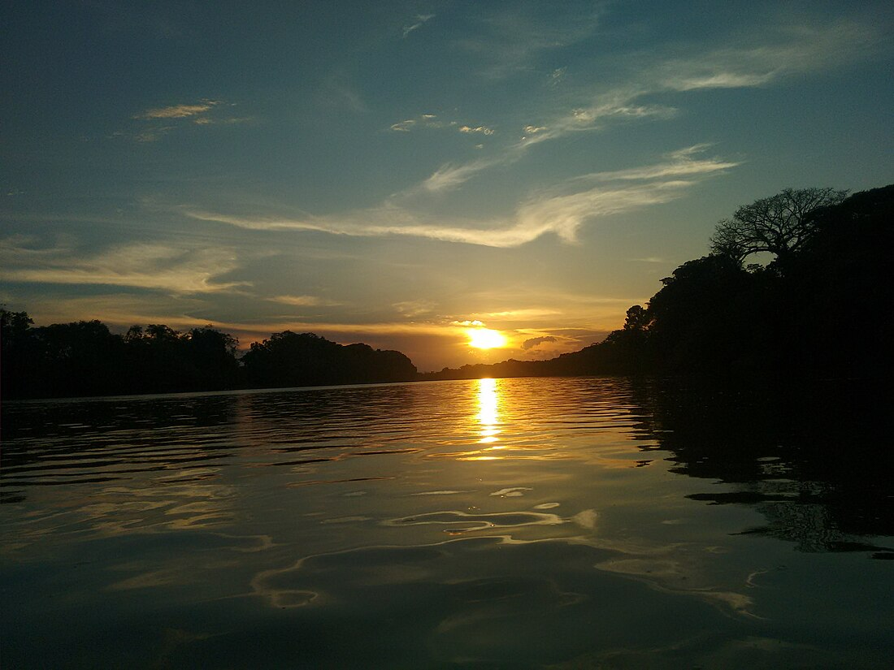 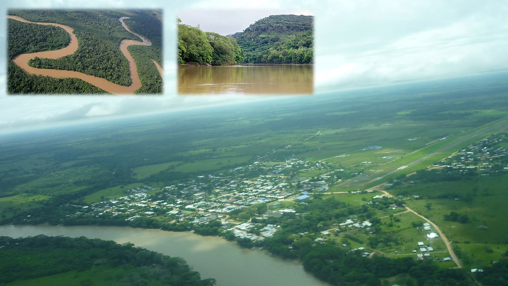
- Atardeceres en los Llanos
 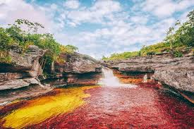
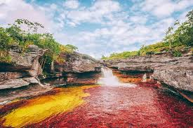
 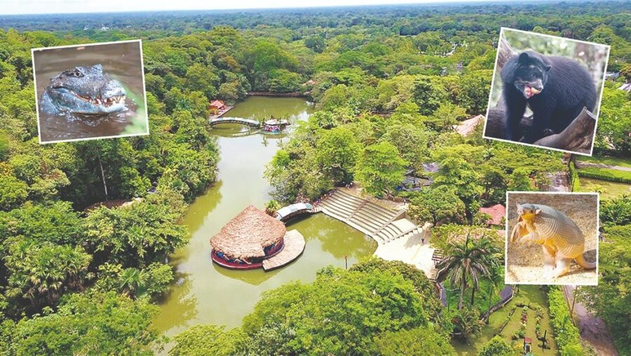
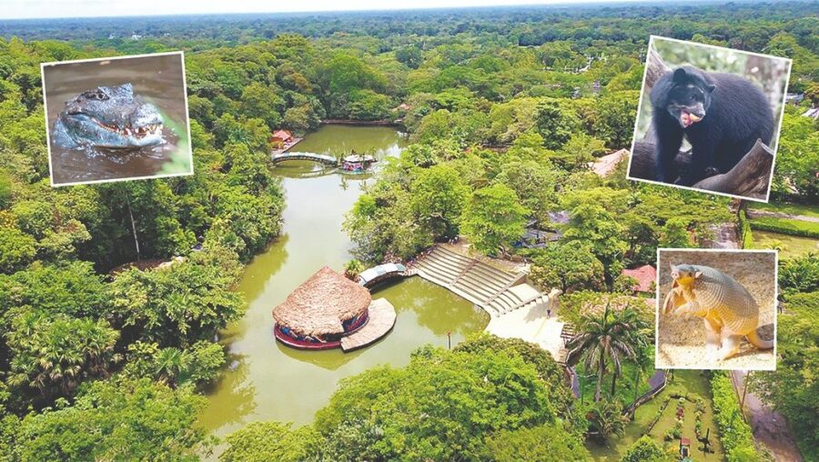
 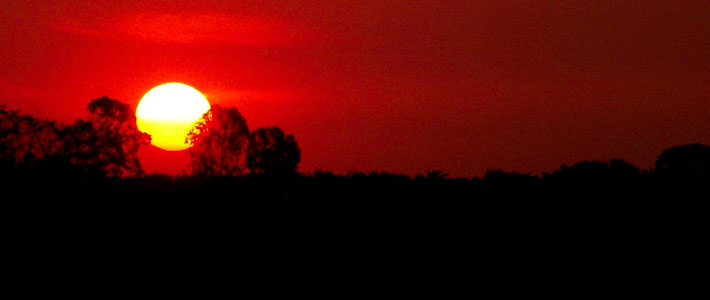
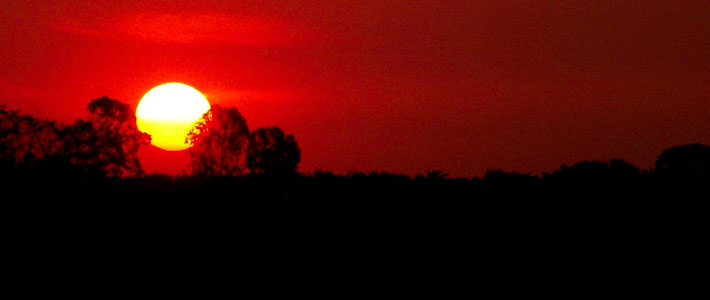
COMIDA TÍPICA
La gastronomía del Meta incluye platos llaneros tradicionales como la mamona, la hallaca y el pan de arroz.
- Machuque llanero 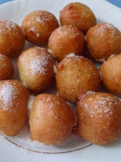 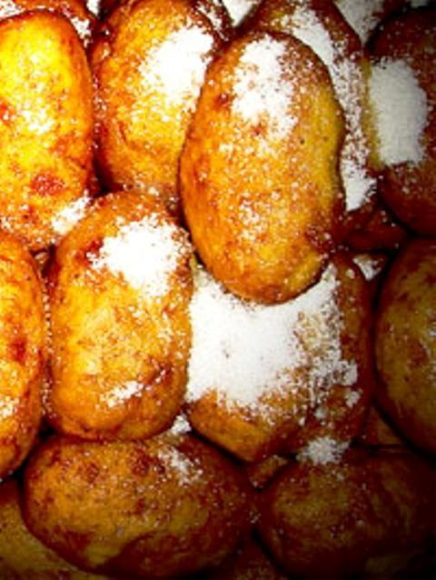
- Carne a la perra
- Pan de arroz 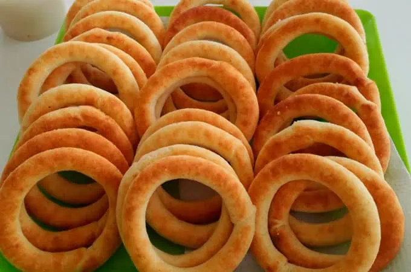 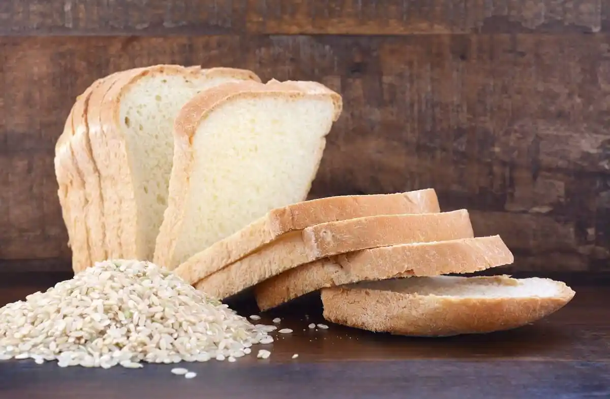
- Tungos llaneros


 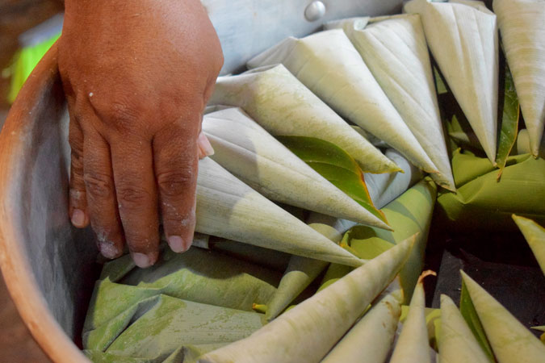
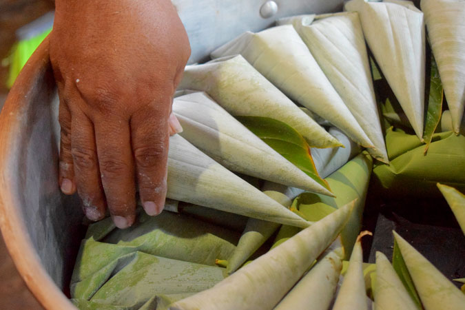
SECTOR ECONÓMICO
El Meta basa su economía en la agricultura, la ganadería y la extracción de petróleo.
- El Meta es una de las principales regiones productoras de petróleo en Colombia. 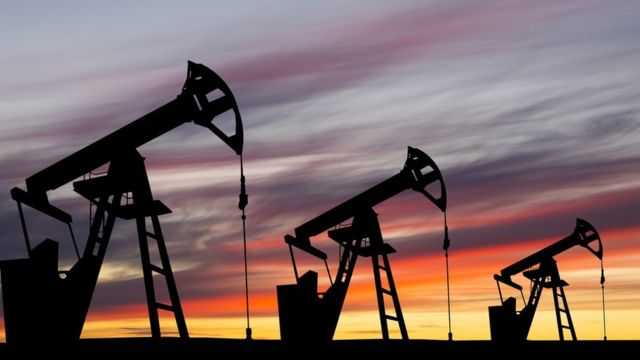 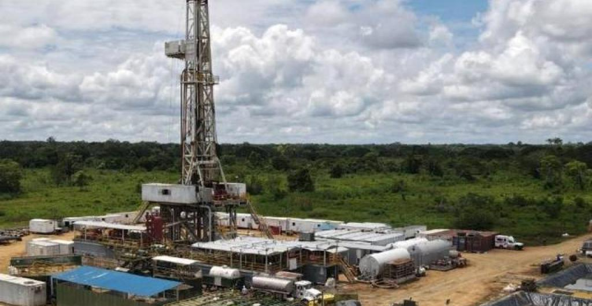
- La cría de ganado bovino es una de las actividades económicas más importantes. 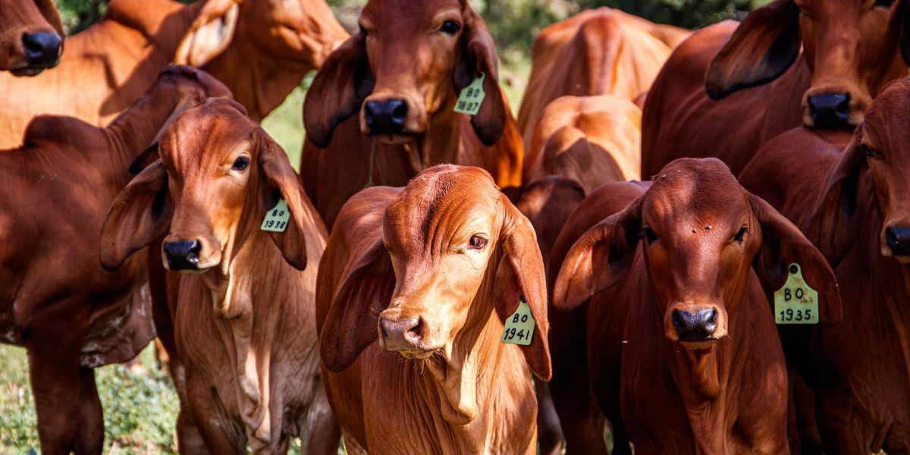 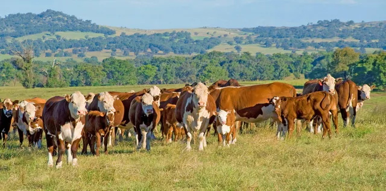
- Se destacan los cultivos de arroz, plátano y palma de aceite. 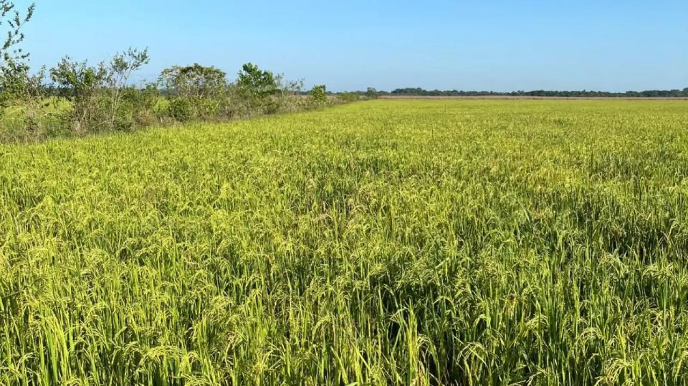 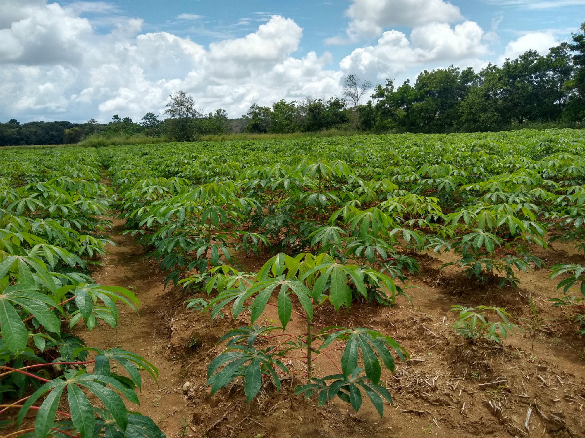
PETRÓLEO
GANADERÍA
AGRICULTURA

Para volver a la página principal presione aquí: volver